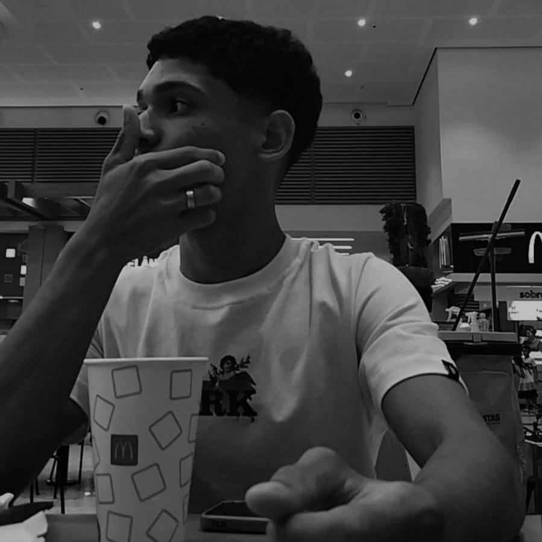
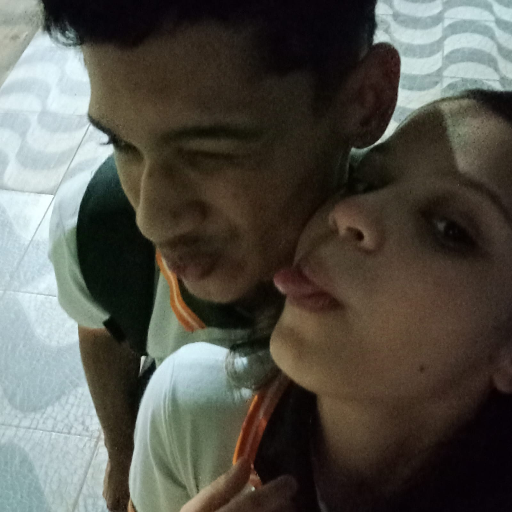
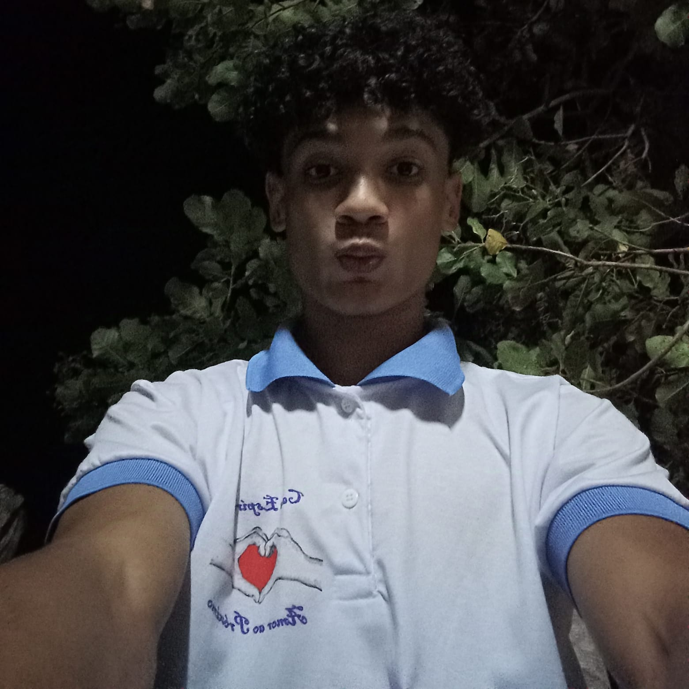
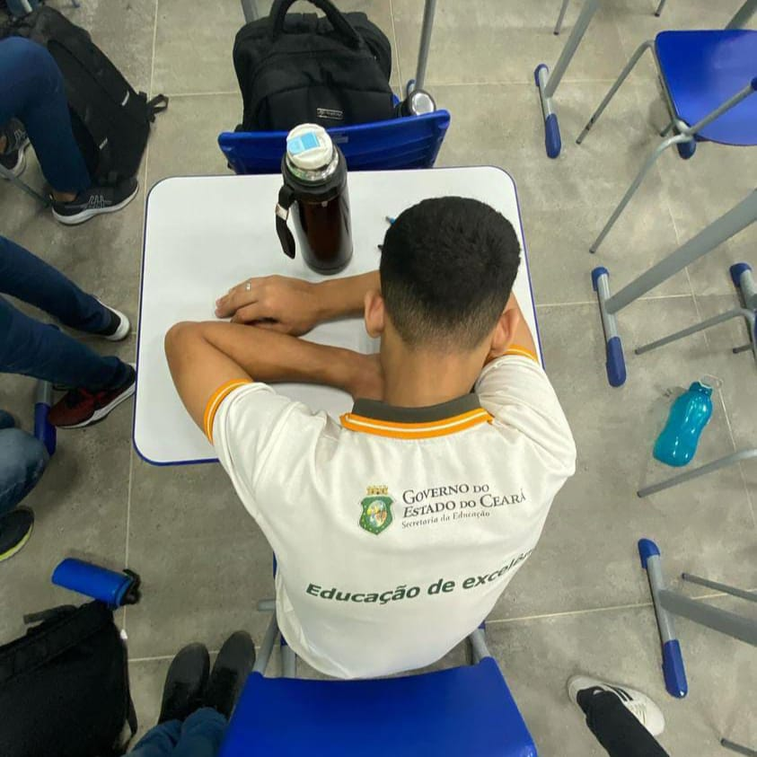

Quem Sou?




Meu nome é Anderson Ribeiro Costa, nasci no dia 08 de novembro de 2007 e sou apaixonado pela área de Tecnologia da Informação (TI). Desde cedo, me fascinou entender o funcionamento do mundo digital, e isso se tornou uma parte importante da minha vida. Além disso, sou muito ligado à minha família, especialmente como filho e irmão, e sigo a filosofia espírita, que me ajuda a encontrar equilíbrio e propósito. Estou em um relacionamento especial, onde o apoio e o companheirismo são fundamentais para nosso crescimento mútuo, tanto emocional quanto espiritual. A tecnologia, minhas crenças e as pessoas que amo são essenciais para mim!